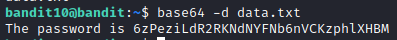

OverTheWire: Bandit Walkthrough
by ssi51
OverTheWire Bandit is an online platform that offers a series of beginner-friendly cybersecurity challenges.
Players learn by solving tasks involving Linux command-line, cryptography, and hacking concepts, progressing
through increasingly difficult levels. It's a hands-on way to learn about cybersecurity in a controlled
environment.
This platform helped me a lot with getting used to Linux commands. Shoutout to Fatah for introducing me this website!
Level 0
Goal: Log into the game using SSH.
We’re given username and password to log into SSH on port 2220. Input the password bandit0 and you’re in!
To list out all the files in the current directory, use ls. To read the file, we'll use cat [filename] command.
There you go. We got the password for the next level.
Level 1
Hint: The password for the next level is stored in a file called readme located in the home directory.
Let’s log into Level 1 using the password we received earlier.
As usual we will use ls to list out the files in home directory. To read them we’ll use cat [filename] command.
But in this case, it seems like cat cannot read a file that starts with a symbol. To solve this, we need to state the full directory path to read them. To double-check the current directory path, use the pwd command. Then, cat /home/bandit1/-
Level 2
Hint: The password for the next level is stored in a file called spaces in this filename located in the home directory.
Let’s start with ls. To read the file, we can use the cat command.
 Uh-oh there’s an error. Looks like cat can’t read filename with spaces. To solve this, we need to add quotation marks in between the filename: cat “spaces in this filename”
Uh-oh there’s an error. Looks like cat can’t read filename with spaces. To solve this, we need to add quotation marks in between the filename: cat “spaces in this filename”
Level 3
Hint:The password for the next level is stored in a hidden file in the inhere directory.
As usual, to list out all the files, we’ll use ls. We can see there’s directory called
inhere. To go to that directory, we’ll use cd command. When we try to list out files
in inhere directory, we didn’t get any output. From the hint, it says it is a hidden file. To view a hidden file,
we need to add extra command with ls.
We will use ls -lai which means:
-l means use a long listing format
-a means do not ignore entries starting with .
-i means print the index number of each file
Then, we’ll use cat to read the content.
Level 4
Hint:The password for the next level is stored in the only human-readable file in the inhere directory.
As usual, let’s start with listing all the files in the inhere directory
Oh my there’s so many files! Instead of having to cat (or read) one by one,
we need to remember that we’re given a hint. The password in human-readable file. So let’s check their
filetype by using the command file ./*
./ means current directory
* means select all files
We can see that -file07 is in ASCII text. That should be it. Let’s read it.
Level 5
Hint: The password for the next level is stored in a file somewhere under the inhere directory and has all of the following properties:
- human-readable
- 1033 bytes in size
- not executable
As usual, we’ll go to the inhere directory and list out all the contents. We can see there’s a lot of
directories in here.
To make it simple, let’s find the file according to the properties given by the hint.
We’ll use the find command. To specify the file, we’ll add -size 1033c
c in size means bytes
So over here, it gives the output where is the file according to our specifications that we have set earlier. Let’s cat the file to get the password.
Level 6
Hint: The password for the next level is stored somewhere on the server and has all of the following properties:
- owned by user bandit7
- owned by group bandit6
- 33 bytes in size
According to the hint, the password is stored somewhere in the server. So, let’s go to the / directory. (Use cd / command.)
/ means root directory. It is the uppermost directory in the Linux system containing all the files, device data and system information in the form of directories.
Now we’re in the root directory. Let’s use the find command just like previous task.
But this time, let’s specify the user owner, group owner and file size according to the hint. To do this, use
find ./ -type f -size 33c -user bandit7 -group bandit6
-type f means the type is a file
-user bandit7 means the owner of the file is bandit7
-group bandit6 means the group owner of the file is bandit6
Oh my, there’s so many Permission denied status. Let’s omit this by adding 2>/dev/null to the command.
The command 2>/dev/null is like you're telling the shell to redirect the error messages produced by the command to /dev/null, effectively silencing them and preventing them from being displayed on the screen or captured in the output.
Level 7
Hint: The password for the next level is stored in the file data.txt next to the word millionth
If we cat the data.txt file, it will give us a countless words of output
Let’s try finding the specific word in the text file, in this case, its the word “millionth”.
We can use grep for this. cat data.txt | grep “millionth”
grep is a command-line utility for searching plain-text data sets for lines that match a regular expression.
Level 8
Hint: The password for the next level is stored in the file data.txt and is the only line of text that occurs only once.
We will use the same method as before, but keep in mind that the line of text only occurs once. We will make use of the uniq command.
Uniq will outputs the text with adjacent identical lines collapsed to one, unique line of text.
This command will still give us countless amount of outputs. This is because it does not get rid of the duplicated ones. The correct command would be sort data.txt | uniq -u
Level 9
Hint: The password for the next level is stored in the file data.txt in one of the few human-readable strings, preceded by several ‘=’ characters.
This level would be just the same as Level 7. Let’s try cat data.txt | grep "="
Looks like it couldn’t give what we want. Normally, if the first few bytes of a file indicate that the file
contains binary data, grep outputs only a message saying that the file matches the pattern. To fix this,
instead of using cat, we’ll use strings.
Strings command is used to return the string characters into files. It primarily focuses on determining the contents of and extracting text from the binary files (non-text file).
Level 10
Hint: The password for the next level is stored in the file data.txt, which contains base64 encoded data
We got one hint that says the file is in base64. To convert base64 to ASCII in kali, we can use the command base64 -d data.txt

-d means decode
Level 11
Hint: The password for the next level is stored in the file data.txt, where all lowercase (a-z) and uppercase (A-Z) letters have been rotated by 13 positions
Rotated by 13 positions are also known as Rot13 Cipher. Let’s grep the file and decode it online.
Here I copied the text from the file and paste it at https://rot13.com/
The password is JVNBBFSmZwKKOP0XbFXOoW8chDz5yVRv
Conclusion
Congratulations! We made it until Level 12!
Level 0 up to 12 are aimed at absolute beginners. It will teach the basics needed to be able to play other wargames. You may continue until you made it to Level 33. Thank you so much for reading!